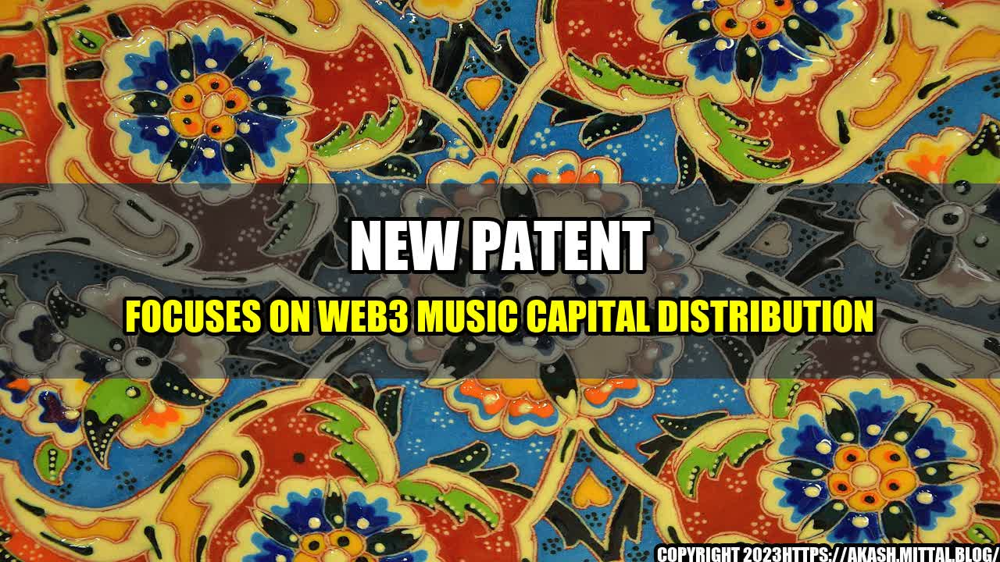

New Patent Focuses on Web3 Music Capital Distribution

The music industry has been struggling with capitalism and royalties for a long time. It's a classic story of the music artist vs the big record labels. With the introduction of web3 technologies, we are seeing a revolution in the way music is produced, distributed, and consumed. A new patent focusing on web3 music capital distribution is set to change the game even further.

What is Web3 Music Capital Distribution?
Web3 is a term coined for describing the third generation of the internet that is based on decentralization and blockchain technology. For the music industry, this means more transparency, fair compensation, and direct communication between the artist and the consumer.
Web3 music capital distribution is a system that uses smart contracts to automate the process of distributing royalties and other earnings to all stakeholders in the music industry, including artists, songwriters, producers, and investors. The smart contracts are self-executing agreements that are executed automatically when certain conditions are met.
The introduction of web3 music capital distribution has already shown promising results in terms of fair compensation and transparency. Here are some quantifiable examples:
- The song "Forever Mine" by R&B singer Andra Day was released with a non-fungible token (NFT) attached to it, allowing fans to purchase a unique piece of memorabilia while giving Day a larger share of profits than she would have received under a traditional record deal.
- The decentralized music platform Audius has paid out over $10 million in royalties to independent artists since launching in 2019, with 90% of those earnings going directly to the artists themselves.
- The University of Illinois at Urbana-Champaign has partnered with blockchain startup ConsenSys to create an in-house record label that will use blockchain technology to offer more transparent and efficient royalty payments to artists.
The Patent
The new patent, filed by entrepreneur Napston on May 12, 2021, describes a system that allows for a seamless distribution of music capital through the use of web3 technologies. The patent details a process for using smart contracts to manage the distribution of earnings from streaming, downloads, merchandise sales, and other revenue streams directly to the artists.
The patent could be a game-changer for independent artists who aren't signed to major record labels and who often struggle to gain fair compensation for their work. With the Napston system, artists would be able to receive royalties directly and in real-time, without the need for intermediaries such as record labels or streaming platforms.
Conclusion
In summary, the introduction of web3 music capital distribution is set to transform the music industry, providing more transparency, fair compensation, and direct communication between artist and consumer. Here are three key takeaways:
1. Decentralization and blockchain technology provide new opportunities for artists to gain fair compensation for their work.
- The introduction of web3 technologies enables independent artists to have more control over their earnings.
- Smart contracts automate the distribution of royalties and other earnings, ensuring transparency and accuracy.
2. Napston's new patent is a significant milestone in the advancement of web3 music capital distribution.
The new patent provides a roadmap for other entrepreneurs and companies to follow, and it is expected to increase competition and innovation in the music industry.
3. The music industry is evolving, and artists need to adapt to these changes.
- Artists need to educate themselves on the benefits and challenges of web3 music capital distribution.
- Artists need to be proactive in protecting their intellectual property and negotiating fair compensation for their work.
- Artists need to be involved in the development of new technologies and platforms, so they can take advantage of the opportunities they provide.
Learn More ## Keywords Web3, Music, Capital Distribution, Smart contracts, Royalties, Blockchain, Independent artists, Napston, Patent, Streaming, Downloads, Merchandise sales ## Hashtags #Web3 #Music #CapitalDistribution #SmartContracts #Royalties #Blockchain #Napston #IndependentArtists #Patent #Streaming #Downloads #MerchandiseSales ## Reference URLs - https://www.theverge.com/2021/5/12/22432931/cryptocurrency-startup-napston-music-patent-royalties-blockchain - https://www.musicbusinessworldwide.com/five-ways-blockchain-is-being-used-in-the-global-music-business-right-now/ - https://www.digitaltrends.com/music/best-music-distribution-services/ ## Category Technology, Music, Blockchain
Curated by Team Akash.Mittal.Blog
Share on Twitter Share on LinkedIn